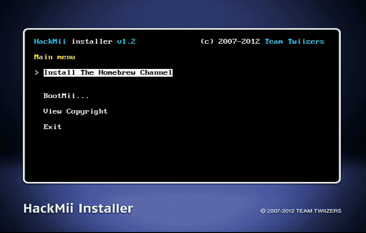

Homebrew Channel - 仅供Wii mini
如果需要中文帮助，国内用户可以添加QQ群：417992332。
如果你需要有关本教程的任何帮助, 请加入RiiConnect24 Discord服务器 (推荐)或 发送电子邮件到 [email protected]。

HBC是你可以启动自制应用的地方。
步骤
本页面仅适用于Wii mini. 如果您使用Wii，请访问此指南。
虽然可以在Wii mini上安装BootMii，但您需要焊接SD卡槽。 这要求您使用特殊工具打开Wii mini，所以不推荐。
-
你会看见一个诈骗警告提醒。 等待30秒，直到”Press 1 to continue”出现，然后按1。

-
按下Continue，然后选择Install The Homebrew Channel，然后按下install。
-
当完成时，按下继续。

-
当结束时，选择
Exit来退出HackMii installer。
继续 安装Priiloader Priiloader提供防砖机保护，并且非常推荐你安装。